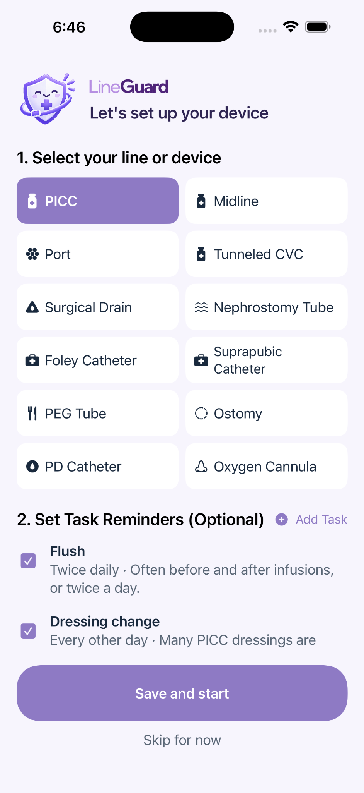
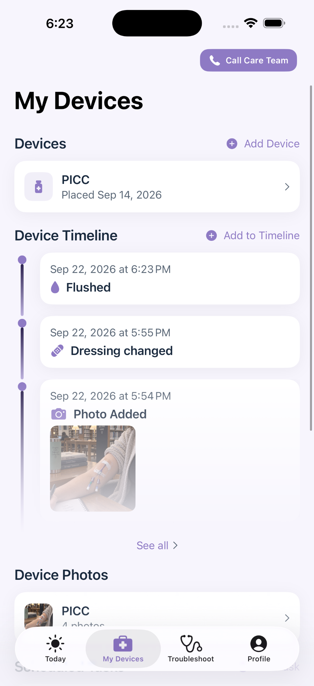

Device education
Visual guides explain the parts, everyday care, and what to expect.
Practical device-care information, photo tracking, and helpful routines—together in one easy-to-use place.


Clear guidance and useful tools, organized around the device you use.
Visual guides explain the parts, everyday care, and what to expect.
Explore common situations and when to contact your care team.
Keep device-related tasks and reminders in one place.
Save dated device photos and revisit them alongside your timeline.
Keep dated care events and device updates together so you can look back when you need to.
LineGuard brings device-specific information together so you can find what is relevant to you.
LineGuard is designed to make living with a medical device less confusing by putting useful information where you can find it when you need it.
Download LineGuard ↗LineGuard provides general educational information and organizational tools. It does not provide medical diagnoses, replace professional medical advice, or establish a clinician-patient relationship. Always follow the instructions provided by your treating healthcare professionals and the manufacturer of your specific medical device. If you believe you are experiencing a medical emergency, call 911 or your local emergency service.